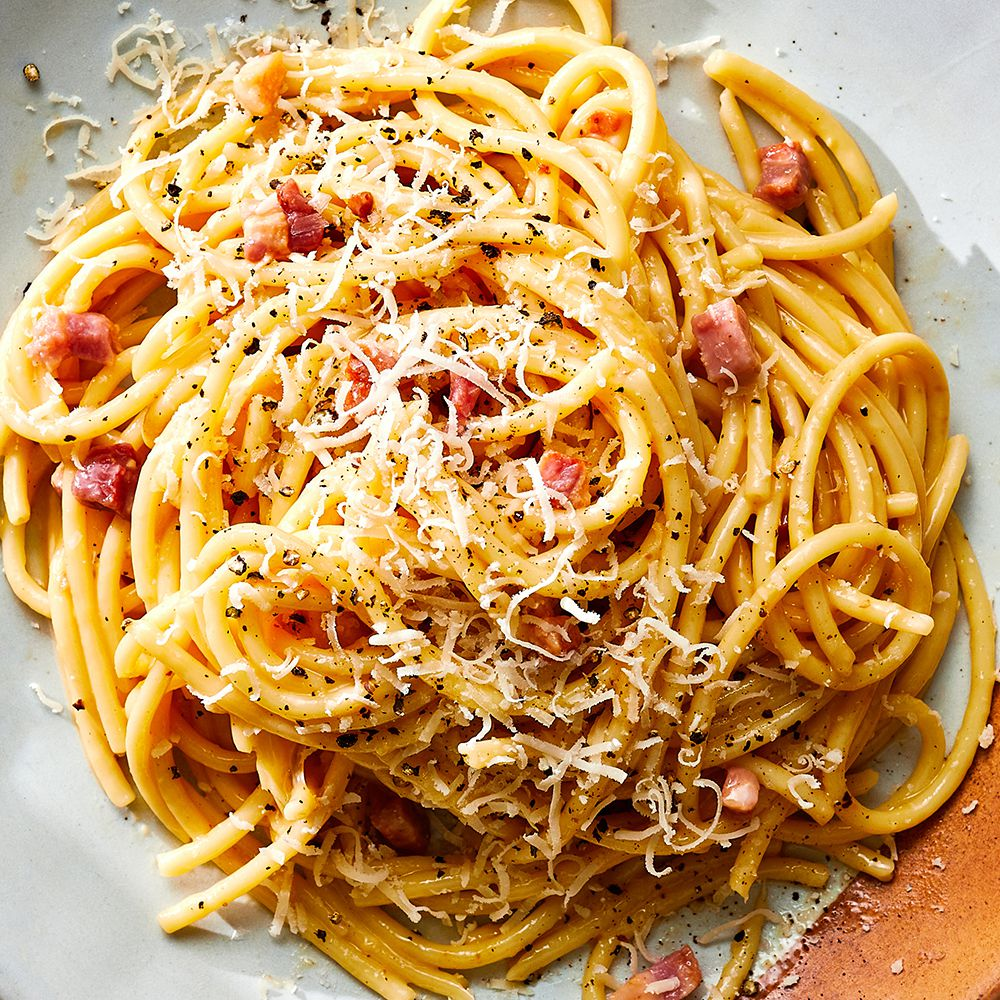
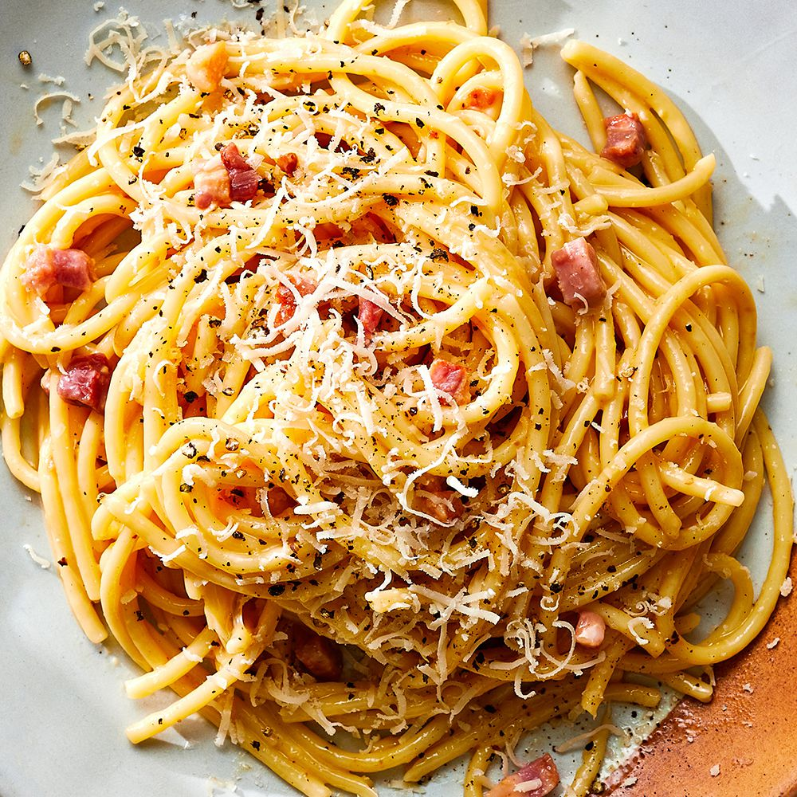

Pastas are divided into two broad categories: dried (pasta secca) and fresh (pasta fresca). Most dried pasta is produced commercially via an extrusion process, although it can be produced at home. Fresh pasta is traditionally produced by hand, sometimes with the aid of simple machines.[3] Fresh pastas available in grocery stores are produced commercially by large-scale machines.
Both dried and fresh pastas come in a number of shapes and varieties, with 310 specific forms known by over 1,300 documented names.[4]
In Italy, the names of specific pasta shapes or types often vary by locale. For example, the pasta form cavatelli is known by 28 different names depending upon the town and region. Common forms of pasta include long and short shapes, tubes, flat shapes or sheets, miniature shapes for soup, those meant to be filled or stuffed, and specialty or decorative shapes.
 

| Naziv paste | Cena (rsd) |
|---|---|
| Carbonara | 500 | Bolognese | 600 |